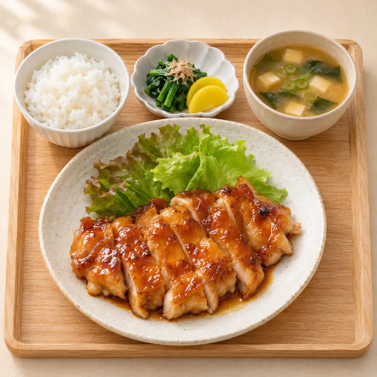

毎日の「何つくろう？」に。
おいしい一週間を、
気軽にはじめよう。
食べたい料理を選んで、買い物までひとまとめ。
今日のごはんに、小さなゆとりを。
登録レシピ60品 · 1〜7日 · 1人分の使い切り計画

このアプリについて · 栄養値は検証前の概算です
このアプリは現在、60種類の登録済みレシピから献立を提案する仕組みです。AIによる新しいレシピの提案は準備中で、まだ接続していません。入力内容はこのブラウザの保存領域にのみ保管され、サーバーへの送信機能はありません。特定の店舗・企業の公式サービスではありません。
USE IT UP
食べたい料理から、使い切り計画をつくる
-
1. 条件
-
2. 食べたい料理
まだ選んでいません。
-
3. 自宅にある食材（名前だけでOK）
量は入力しなくて大丈夫です。量がわからないため「家にあるから買わなくてよい」とは判断せず、必要な量を買い物リストで確認してもらいます。
4. 献立（仮）
最初に選んだ料理は1日目に固定し、ほかの日を組み直します。「調理記録なし」は、このアプリで「作った」と記録していない料理です。
5. 買い物リストとパック量
買うパックの量を入力してください（例：鶏もも肉 300g × 1パック）。量が書かれていないパックは「パック（量不明）」を選べます。その場合、残りは計算しません。g・個などの単位は自動で換算しません。
7. 残る食材の確認
PLAN YOUR TABLE
献立をつくる
カロリー・たんぱく質は1人分の暫定的な概算値です。主食や副菜の追加分は含まない場合があります。
変更した献立と買い物チェックはこの端末のブラウザに保存されます。
今週の夕食
買い物リスト
同じ食材は合算します。調味料も含まれます。すでに家にある食材はチェックして整理できます。
レシピを探す
60種類から検索できます。追加レシピの手順は簡易版です。材料・手順・保存目安を確認できます。